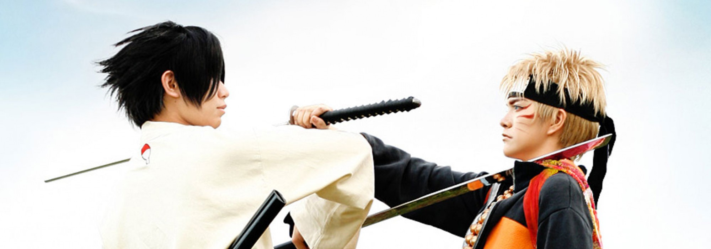

Cette pratique, née aux Etats-Unis mais largement développée par les Japonais, consiste à se déguiser en personnage connu (généralement de jeux vidéo ou de manga / animé) et à participer à des conventions en jouant son rôle. Au Japon, on trouve des espaces réservés à la présentation de cosplay dans des évènements comme le Tokyo Game Show ou le Comiket. Les cosplayers et cosplayeuses s’y rendent seuls ou en groupes, et s’y font photographier par des amateurs. Les échanges de cartes de visites y sont fréquents entre ces pratiquants de hobbies chevronnés. Un concours international de cosplay réunit les amateurs chaque année à Nagoya, au World Cosplay Summit. En-dehors de ces conventions, on les trouvera également dans les rues de Tokyo, en particulier à Harajuku ou Akihabara. La mode du cosplay a débarqué en occident vers la fin des années 1990, au moment où les conventions de type Japan Expo ou Epitanime commençaient à voir le jour et se démocratiser. Contrairement au Japon, le cosplay est ici plutôt l’occasion de participer à des concours pour déterminer le meilleur costume, la meilleure prestation, etc. La pratique du cosplay est parfois mal considérée socialement, mais elle nécessite le développement de compétences multiples, notamment : La capacité à jouer la comédie ; L’habileté manuelle avec la couture et le bricolage ; L’expression artistique par le maquillage, la photographie et la maîtrise de logiciels de retouche.
Cependant, on trouve de tout parmi les fans de cosplay et parfois même des choses affreuses. Au Japon, la conception est faite avec minutie et l’on trouve même certains magasins qui vendent des accessoires et des costumes prêts à l’emploi. En occident, les plus manuels pourront fréquenter merceries et magasins de bricolage, et les plus pragmatiques pourront se tourner vers les boutiques – souvent en ligne – dédiées aux déguisements et au cosplay. Le cosplay, que le costume soit réalisé de A à Z ou directement acheté en magasin, est une activité onéreuse. Certains cosplayers envisagent donc une professionnalisation de leur hobby, en proposant par exemple de réaliser des costumes ou éléments de costumes pour d’autres amateurs, ou de poser déguisés pour des opérations de publicité. Le développement des réseaux sociaux permet d’offrir une visibilité permanente aux cosplayers et certains bénéficient d’une popularité suffisante pour pouvoir vivre de leur activité. La pratique du cosplay trouve son inspiration dans tous les genres : animé, manga, jeux vidéo, mais aussi comics, cinéma, séries TV, ou musique (en particulier le Visual Kei). Certains costumes sont de véritables petits bijoux, et il n’est pas étonnant que cette activité gagne en popularité, tendance que vient confirmer l’émergence d’une presse spécialisée depuis le milieu des années 2010.